haapavesi :
carrollstreetstation :
haapavesi :
testing vid quality
what mod is this? i feel like i recognize it, but i didn’t really get into HL multiplayer back when it was big due to being on dialup
http://scienceandindustrygame.com/
gathers are held every sunday and there are impromptu pugs during the week
Half-Life: Uplink Extended by The Mighty Atom
http://www.moddb.com/mods/half-life-uplink-extended
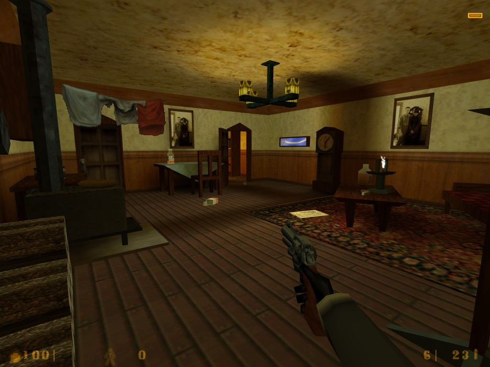
Half-Rats: A Fever Dream (upcoming) by Heath Games
http://www.moddb.com/mods/half-rats-a-fever-dream
dm_clocktower for Half-Life Deathmatch by Victor-933
Just released!
https://www.reddit.com/r/HalfLife/comments/3i1buw/double_whammy/
dm_enpro for Half-Life Deathmatch by Victor-933
Just released!
https://www.reddit.com/r/HalfLife/comments/3i1buw/double_whammy/
dm_enpro for Half-Life Deathmatch by Victor-933
Just released!
https://www.reddit.com/r/HalfLife/comments/3i1buw/double_whammy/
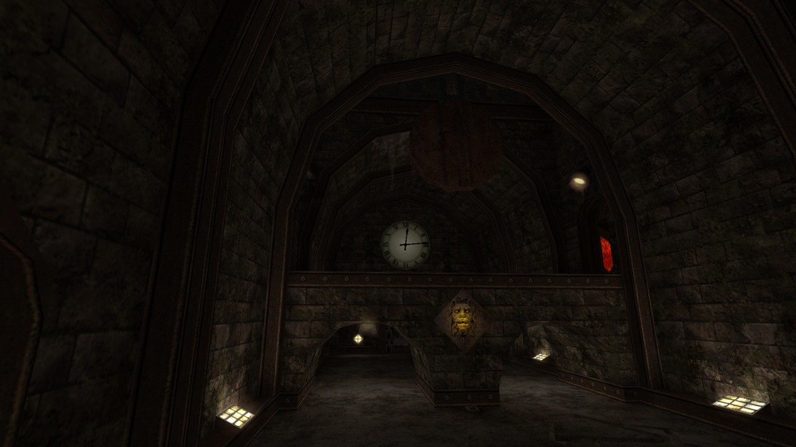
dm_clocktower for Half-Life Deathmatch by Victor-933
Just released!
https://www.reddit.com/r/HalfLife/comments/3i1buw/double_whammy/
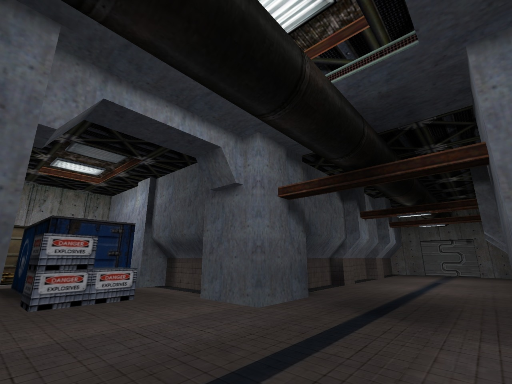
Return 3 (upcoming) by agerix
http://www.moddb.com/mods/return-3-the-beginning
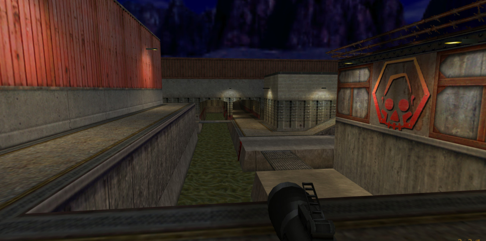
haapavesi :
goldsourcegold :
Canalzone 2 for Team Fortress Classic by Valve
cz2 holds a special place in my heart
Always loved pipe jumping into the enemy base to unleash MIRV spam and then trying to detpack their control room. Good times
Canalzone 2 for Team Fortress Classic by Valve
Focalpoint by Dimitri Vujicic
http://www.runthinkshootlive.com/posts/focal-point-half-life/
http://www.moddb.com/mods/focalpoint
ns_nothing for Natural Selection by Ken Banks
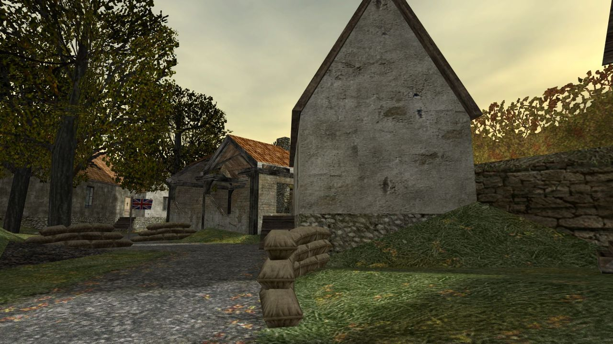
dod_flash for Day of Defeat by Svante Ekholm
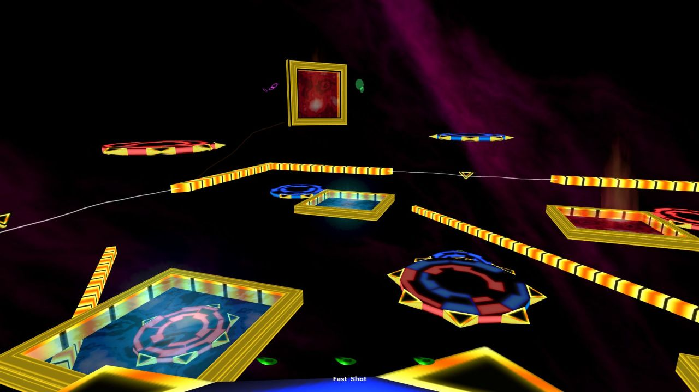
rc_lightyear for Ricochet
Arrangement (upcoming)
http://www.moddb.com/mods/half-life-1-arrangement
Vanguard for Half-Life Deathmatch by Duncan Blair
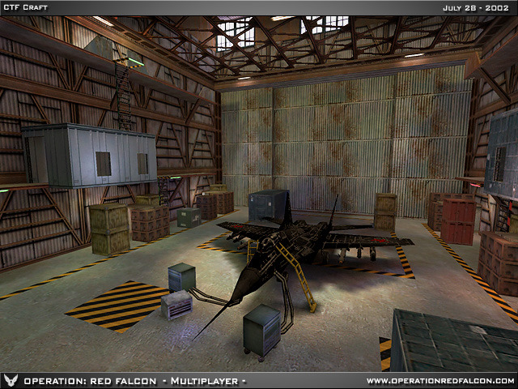
Operation: Red Falcon (unreleased)
Hunted for Team Fortress Classic by Valve
dod_glider for Day of Defeat by Wesley Shull
cs_docks for Counter-Strike by Justin DeJong
Counter-Strike Beta 2, released 16 years ago - August 13, 1999
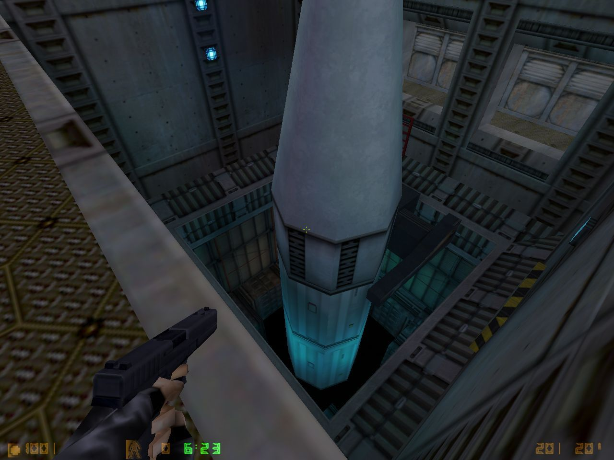
cs_zoption for Counter-Strike by John Attea
Counter-Strike Beta 2, released 16 years ago - August 13, 1999
cs_facility for Counter-Strike by Graham Nardone
Counter-Strike Beta 2, released 16 years ago - August 13, 1999
cs_alley1 for Counter-Strike by Jason Castillo
Counter-Strike Beta 2, released 16 years ago - August 13, 1999
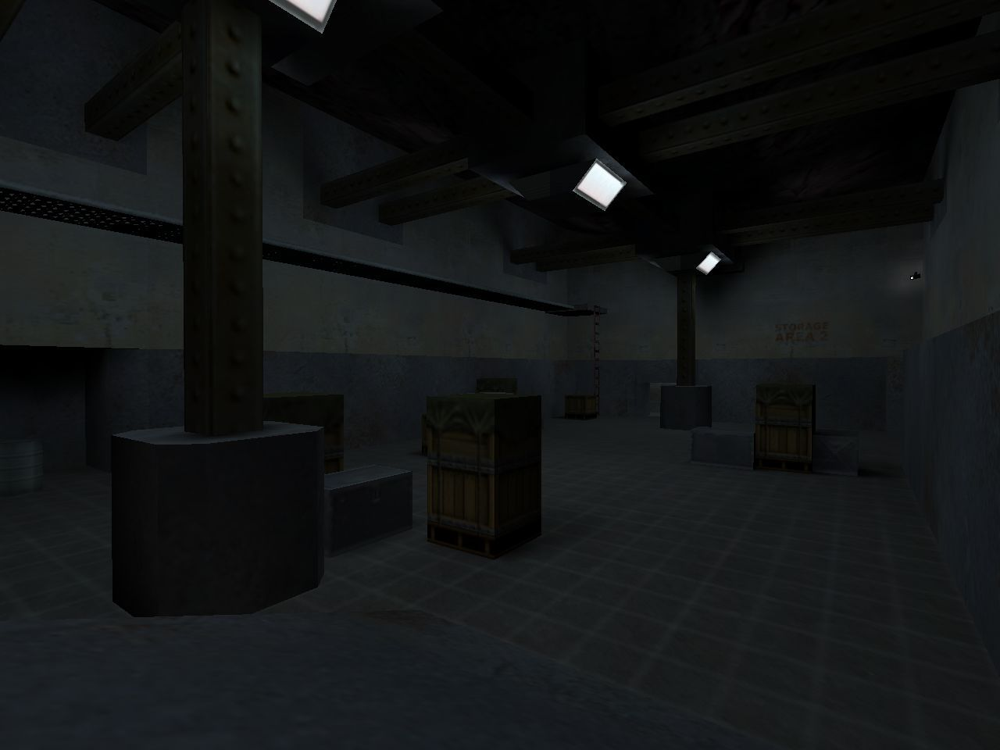
cs_bunker for Counter-Strike by Matthew Van Sickler
Counter-Strike Beta 2, released 16 years ago - August 13, 1999
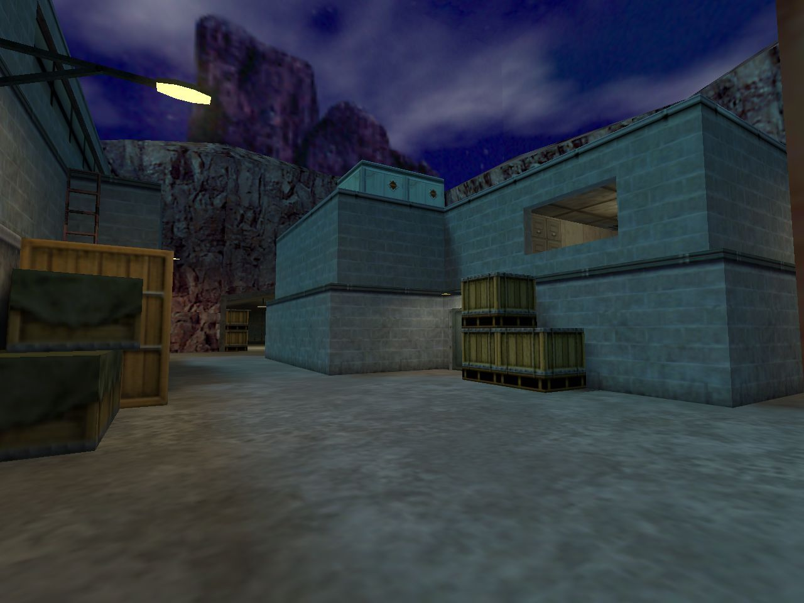
cs_docks for Counter-Strike by Justin DeJong
Counter-Strike Beta 2, released 16 years ago - August 13, 1999
cs_zoption for Counter-Strike by John Attea
Counter-Strike Beta 2, released 16 years ago - August 13, 1999
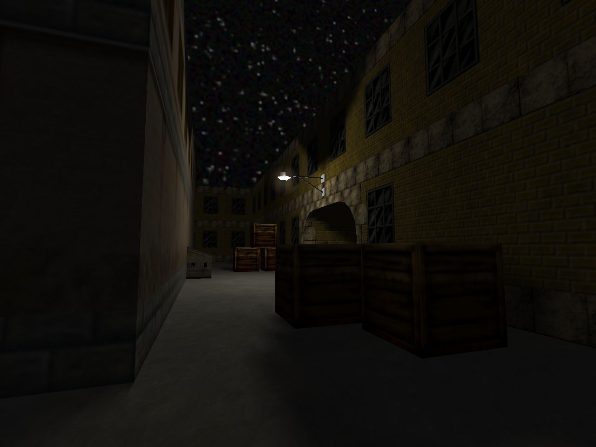
cs_alley1 for Counter-Strike by Jason Castillo
Counter-Strike Beta 2, released 16 years ago - August 13, 1999
cs_bunker for Counter-Strike by Matthew Van Sickler
Counter-Strike Beta 2, released 16 years ago - August 13, 1999
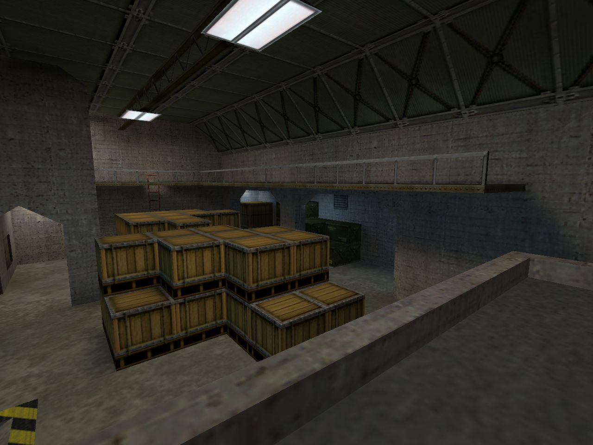
cs_docks for Counter-Strike by Justin DeJong
Counter-Strike Beta 2, released 16 years ago - August 13, 1999
cs_facility for Counter-Strike by Graham Nardone
Counter-Strike Beta 2, released 16 years ago - August 13, 1999
Kicking off a couple days showing off the CS Beta 2.0 maps, already 16 years old!
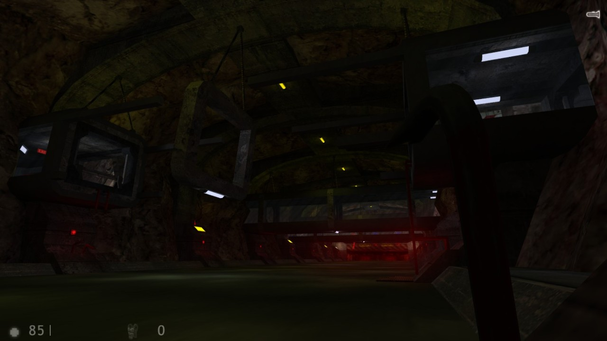
Half-Life: Echoes (upcoming) by MrGnanghttp://www.moddb.com/mods/half-life-echoes
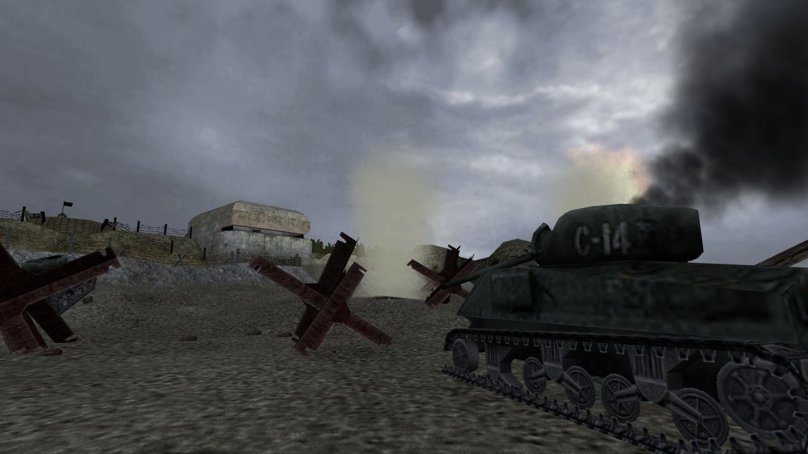
dod_charlie for Day of Defeat by Joel Weech
Gunman Chronicles by Rewolf Software
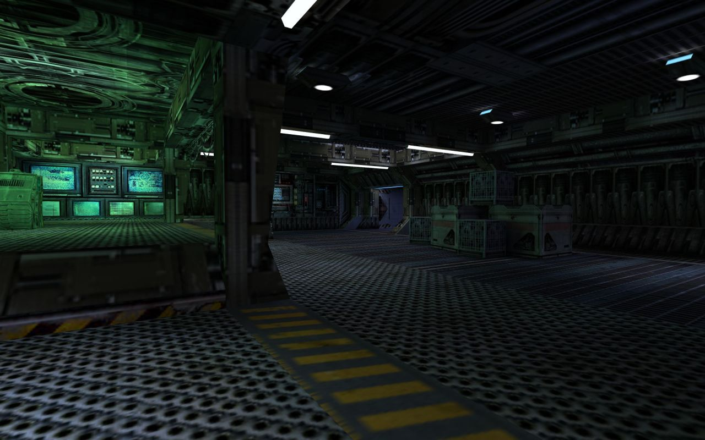
ns_agora for Natural Selection by KawaK
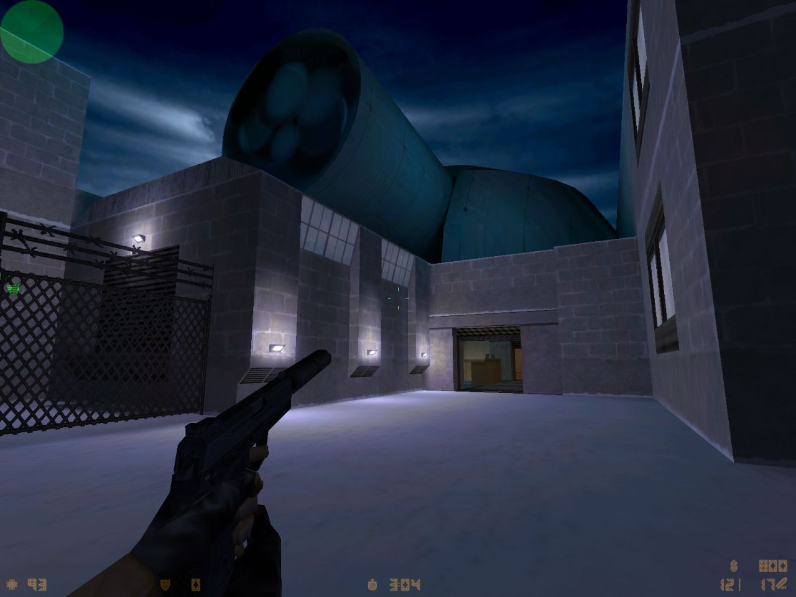
de_soviet for Counter-Strike by Aeolus
Caen from Day of Defeat by Tim Holt
O.U.T.C.A.S.T. (unreleased)
5193r :
< de_desktop.bsp >
Steve “Squall” Schmidt
03/07/2002
de_desktop.txt:
——= De_Desktop by Squall =——
Objective: T’s Plant Bomb on the CPU or in the power supply.
3-7-02 Squall
http://www.goshen.edu/~steveas/maps
server.counter-strike.net/maps
RedSquall’s World :
Right after de_wallmart I had cleaned up the basement and found my 486
computer. I thought it’d be cool to run around inside a computer so I
starting taking photos for textures. The next day de_desktop was done.
de_desktop @ GAMEBANANA
de_desktop (fixed) @ GAMEBANANA
Urban Nights for The Specialists by Cayle George
dcdm5 for Deathmatch Classic by Valve
Poke646: Vendetta by Marc Schroeder
Classic of the Month at RunThinkShootLive.com
http://www.runthinkshootlive.com/posts/poke-646/
ts_wintermute (unreleased) for The Specialists by Thiago Klafke
Black Mesa: Special Tactics Sector (upcoming) for Sven Co-op by Trempler